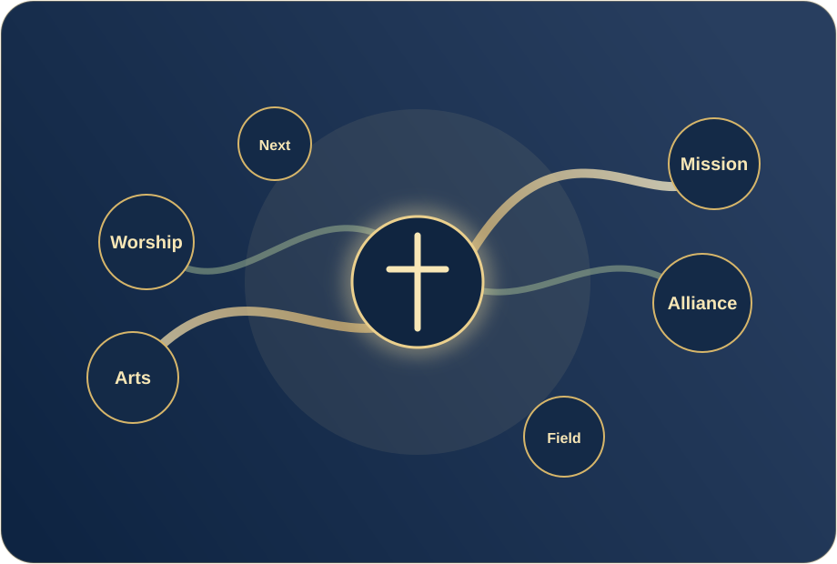

ART
문화예술의 달란트로 복음을 전하는 창조적 표현
아하바프레이즈선교연합 · 하나님 사랑 · 이웃 사랑
행정·주최 | 아하바프레이즈선교회 (C&MA 얼라이언스한국총회)
Gospel through Art, Faith through Generations
문화예술은 복음을 전하는 언어가 되고, 믿음은 다음세대로 이어지는 유산이 됩니다.
ART × UNITY × GOSPEL × GENERATION
예술로 만나고 복음 안에서 연합하며 믿음으로 세대를 잇습니다
아하바프레이즈선교연합(AHAVA PRAISE MISSION ALLIANCE)은 다양한 문화예술의 달란트와 사역이 복음 안에서 만나고 연합하는 장입니다. 아하바프레이즈선교회(C&MA 얼라이언스한국총회)가 행정·주최·주관 단체로 함께합니다.
문화예술을 통해 복음을 전하고, 세대와 세대를 연결하여 믿음을 계승하며, 다음세대를 ‘예수문화세대’로 세워가는 것을 비전으로 합니다.
문화예술의 달란트로 복음을 전하는 창조적 표현
다양한 문화예술의 달란트와 사역이 복음 안에서 만나고 연합하는 장
하나님 사랑과 이웃 사랑을 실천하며 복음을 전파하는 사명
세대와 세대를 연결하여 믿음을 계승하고 다음세대를 ‘예수문화세대’로 세우는 사역
About Ahava Praise
2016년 ‘아하바(AHAVA, 하나님의 사랑)’와 ‘프레이즈(PRAISE, 찬양)’를 담아 아하바프레이즈선교회를 설립하고, 십자가 복음 안에서 하나님 사랑(수직적 관계)과 이웃 사랑(수평적 관계)으로 하나 되어 그 능력과 가능성을 실현하며, 세대와 민족 간의 문화적 단절을 넘어 땅끝 자녀들에게까지 온전한 믿음의 전수를 이루는 것을 사명으로 합니다.
아하바프레이즈선교회는 다양한 문화예술의 달란트와 사역이 복음 안에서 만나고 연합할 수 있는 장을 만들어갑니다. 문화예술을 통해 복음을 전하고, 세대와 세대를 연결하여 믿음을 계승하며, 다음세대를 ‘예수문화세대’로 세워가는 것을 비전으로 합니다.

Vision
Gospel through Art, Faith through Generations
문화예술은 복음을 전하는 언어가 되고,
믿음은 다음세대로 이어지는 유산이 됩니다.
기독교적 진리와 현대 문화예술을 조화롭게 융합한 참여적 콘텐츠와 현장을 연구·지원하여 세상을 향한 복음과 선교, 예배와 섬김의 도구가 되도록 합니다.
“하나님이 세상을 이처럼 사랑하사 독생자를 주셨으니 이는 그를 믿는 자마다 멸망하지 않고 영생을 얻게 하려 하심이라” 요한복음 3:16
부모세대와 자녀세대가 함께 예배하고, 예술로 복음을 전하는 예수문화세대를 세워가며 하나님의 창조질서와 문화회복의 사명을 이어갑니다.
“모든 것이 합력하여 선을 이루느니라.” 로마서 8:28
문화예술 기획 · 운영
예술서비스업 · 공연 및 콘텐츠 기획 · 예술선교 프로젝트
복합문화예술공간 (아하바프레이즈센터)
예배 · 공연 · 전시 · 문화예술 프로그램 · 연합모임 공간 운영
문화예술선교 교육
문화예술선교학교 · 다음세대 인재 양성 · 예술선교 교육과정
무용선교
팀장 배지민 · 예배와 공연 · 국내외 선교 협력
선교후원예배
선교후원예배 기획 · 선교사 지원 · 선교현장 협력
연합선교 프로젝트
땅끝12선교 · 크리스마스 for 시우에게 · 연합선교 기획
국내외 현장선교
국내 농어촌선교 · 해외 단기선교 · 현장 중심 선교체험
다음세대 · 기독예술가족공동체 · 온세대사역
요벨(YOVEL) · 기독예술가족공동체 · 다음세대 신앙 계승 · 온세대 예배와 사역 · 예수문화 확산
History
문화선교 기획과 선교예배, 후원 콘서트, 다음세대 프로그램, 국내외 현장 사역을 이어왔습니다.
Event Archive
아하바프레이즈선교연합과 협력 네트워크가 함께한 예술선교 현장을 소개합니다. 각 행사 이미지를 통해 사역의 방향과 실제 현장을 확인할 수 있습니다.

탄자니아 샤론쉘터 위기모자가정·아동 공부방 후원을 위한 선교찬양제입니다. 클릭하면 행사 설명과 사진 자료를 볼 수 있습니다.
2026. 1. 17 · 인천중앙성결교회 HAPPY NEW YEAR TANZANIA 상세페이지 보기 →
예술로 복음을 전하고 연합으로 미래를 열어가는 문화예술선교학교와 기독청년예술연합 YOV:EL의 특별 쇼케이스입니다.
2026. 7. 12 · 오후 6:00 · 명지대학교 미래관 4층 3406호
필리핀 민도로 망얀족 어린이 후원예배로, 쌀과 신발을 나누며 예수님의 사랑을 전하는 시간입니다.
2026. 5. 31 · 인천열방교회
외국인 유학생, 이주민 공동체, 한국 청년들이 함께하는 문화교류와 평화통일 뮤직페스티벌입니다.
2026. 5. 24 · 임진각 DMZ 생태관광지원센터
성경적 메시지를 예술과 퍼포먼스, 아트토크로 나누는 전시 오프닝 세리머니입니다.
2026. 5. 21 · Gallery AlleyHost & Partners
아하바프레이즈선교연합은 아하바프레이즈선교회가 주관·주최 및 행정 주최 단체로 함께하고, 다양한 교회·선교단체·예술단체·기업과 함께 예술선교의 현장을 만들어갑니다.